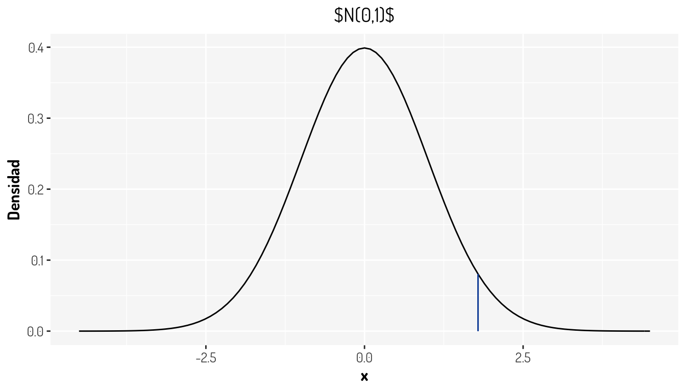
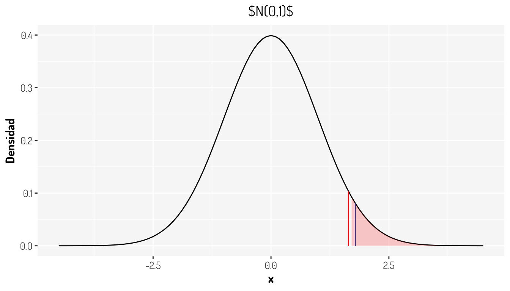
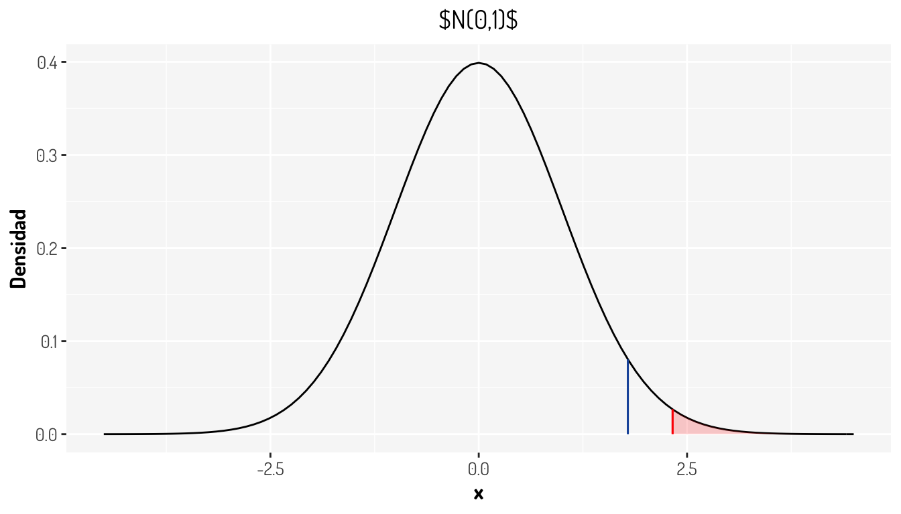
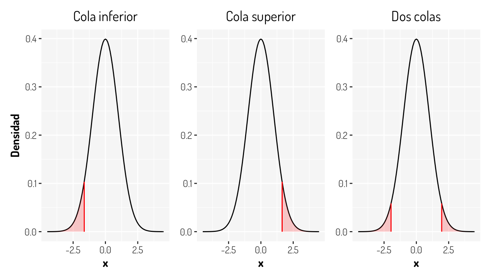
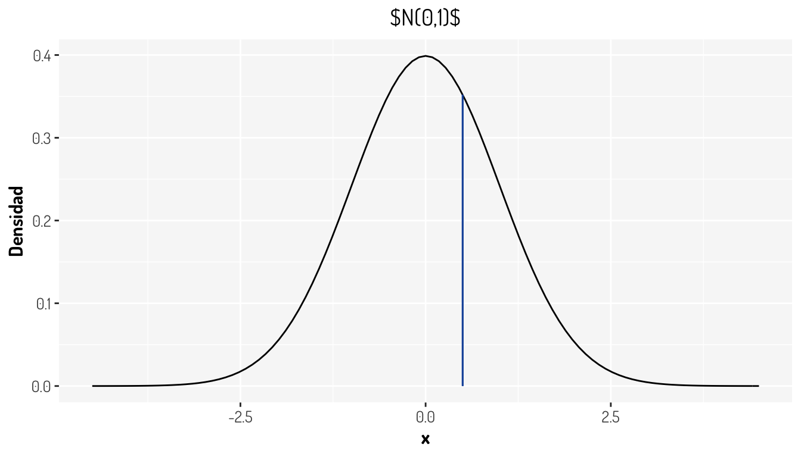
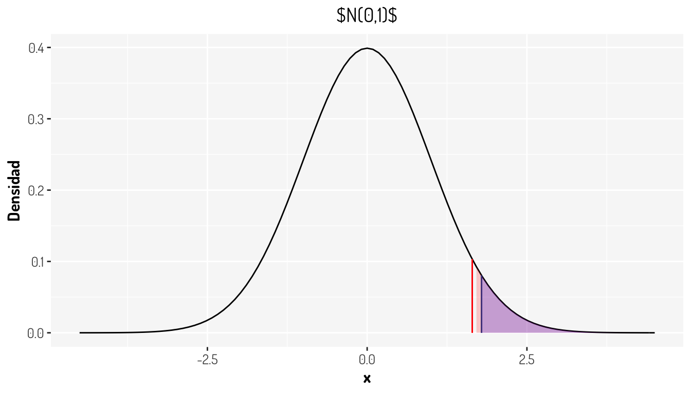

Capítulo 1 Pruebas de hipótesis
Una de las técnicas más poderosas con las que contamos para determinar la certeza de una idea, son las pruebas de hipótesis y en este apartado veremos un resumen acerca de todo lo que implica hacer una prueba de hipótesis junto con los puntos más importantes a tener en cuenta sobre las conclusiones y las decisiones que se toman a la hora de realizar esta técnica estadística.
1.1 ¿Qué es una Prueba de Hipótesis?
Vamos a ver muchas definiciones a lo largo de esta sección y en esta en particular vamos a citar diferentes versiones que se pueden encontrar en varias fuentes populares.
“Una prueba de hipótesis es el proceso de inferir desde una muestra si una afirmación determinada sobre la población parece ser cierta o no.” Conover (1999)
“Una hipótesis estadística es una sentencia sobre la naturaleza de una población. Por lo general, se formula en términos de un determinado parámetro de la población.” Ross (2005)
“La prueba de hipótesis en estadística es una forma de probar los resultados de una encuesta o experimento para ver si tiene resultados significativos. Básicamente, está probando si sus resultados son válidos calculando las probabilidades de que sus resultados hayan ocurrido por casualidad. Si sus resultados pueden haber ocurrido por casualidad, el experimento no será repetible y, por lo tanto, tiene poca utilidad.” (StatisticsHowTo.com)
“Testing in a nutshell: “Does our evidence make the null hypothesis look ridiculous?”". (Cassie Kozyrkov, 2018 desde Towards Data Science)
Como vemos, hay muchas fuentes interesantes y de cada una obtenemos cosas muy interesantes, así que vamos a dar algunas otras definiciones importantes con diferentes interpretaciones.
1.2 Dos tipos de hipótesis
Es cierto que los tipos de hipótesis que existen son simple y compuesta, pero eso no nos interesa por el momento.
Para realizar una prueba de hipótesis necesitamos una sentencia con la que vamos a determinar un comportamiento sobre la muestra (los datos) y su complemento. A la primera la llamaremos Hipótesis nula y a la complementaria Hipótesis alternativa; estas quedan codificadas como \(H_0\) y \(H_1\) respectivamente y lo que siempre vamos a hacer en una prueba de hipótesis es determinar si podemos rechazar con la información disponible la hipótesis nula y esto siempre se expresará de la siguiente manera:
\[ \begin{array}{lcr} H_0 & vs & H_1 \end{array} \]
A lo anterior se le llama regla de decisión. En este proceso vamos a tener que aplicar algunos supuestos sobre la población (vamos a considerar que son ciertos), como la distribución de la muestra, y estos van a recaer sobre la hipótesis nula y en base a esto, la prueba determinará algo sobre esta hipótesis: “La podemos rechazamos o no podemos.” Para que suceda lo primero, vamos a necesitar evidencia de que nuestros datos se comportan en mayor medida como lo que establece la hipótesis alternativa y si esto pasa diremos que se rechaza la hipótesis nula. En caso contrario, sólo podremos decir que No existe información suficiente para rechazar la hipótesis nula. Véase que todo es sobre la \(H_0\).
Algunos ejemplos sencillos que podemos pensar sobre las pruebas de hipótesis son:
\[ \begin{array}{ccc} H_0: \mbox{Plutón es un planeta} & vs & H_1: \mbox{Plutón no es un planeta}\\ H_0: \mbox{La nueva droga no tuvo algún efecto} & vs & H_1: \mbox{La nueva droga tuvo algún efecto}\\ H_0: \mbox{Existe la relación #Cigueñas-#Bebes} & vs & H_1: \mbox{No existe la relación #Cigueñas-#Bebes}\\ \end{array} \]
¿Ya se noto que en los ejemplos lo que se desea es rechazar la hipótesis nula? Esto no es coincidencia ya que es lo que buscamos generalmente (¡esto no sucede siempre!), ¿Por qué? Piensa lo siguiente:
- No podemos afirmar la certeza de algo cuando suponemos que es cierta
- Si no encontramos como rechazar algo, ¿Significa que entonces es cierto o que simplemente no encontramos la forma de rechazarlo?
De hecho, históricamente Fisher consideró a la hipótesis nula como aquella que uno intenta desacreditar. En la palabras de Fisher: “Puede decirse que todos los experimentos se diseñan para poder asignar una probabilidad al hecho de que los resultados se opongan a la hipótesis nula” Ross (2005)
Aquí se deja otro tipo de hipótesis comunes en términos matemáticos
\[ \begin{array}{ccc} H_0: p = p^* & vs & H_1: p \neq p^*\\ H_0: X\sim N(0,1) & vs & H_1: X\nsim N(0,1)\\ H_0: \mathbb{P}(X, Y) = \mathbb{P}(X)\mathbb{P}(Y) & vs & H_1: \mathbb{P}(X, Y) \neq \mathbb{P}(X)\mathbb{P}(Y)\\ \end{array} \]
Ahora, para cada prueba se tendrá algo específico que cambiará la forma de llevar a cabo esta, y esto se consigue con el Estadístico, que no hay que olvidar que un estadístico no es más que un valor que se determina con la información obtenida (los datos, la muestra) y como al inicio pensamos que la hipótesis nula se cumple, este tendrá alguna distribución específica, ya sea una distribución \(N(\mu, \sigma)\), \(t_{(m)}\), \(\chi^2_{(m)}\), \(F_{(m)}\), etc. Véase que este entonces tendrá toda la información de la muestra y no tendrá alguna preferencia sobre la hipótesis \(H_0\) o \(H_1\). Sí bien es cierto que esta pensado en que la hipótesis nula es cierta, la propia muestra nos puede dar evidencia estadística de que nuestra muestra tiene un comportamiento diferente.
No hay que olvidar que estamos tratando de hacer inferencia con datos que bien pudieron ser alterados por el propio azar, por lo que siempre damos una tolerancia a que sucedan eventos no significativos.
1.3 Significancia y confianza
¿Qué significa que un evento sea estadísticamente significante o que no lo sea? Creo que esta referencia nos puede ser de utilidad
“La importancia estadística ayuda a cuantificar si un resultado es probable que se deba al azar o a algún factor de interés” (Amy Gallo, A Refresher on Statistical Significance).
Es decir, si tenemos que una observación no es estadísticamente significante, es porque fue generada por factores externos que la mayoría de la población no tuvo, o bien pudo ser debido simplemente por el azar. Con esto, nosotros podemos establecer un margen para permitir este tipo de observaciones, ya que establecer que nuestras conclusiones en base a nuestra prueba sucederán siempre es algo atrevido; no hay que olvidar que en primera estamos trabajando bajo variables aleatorias, por lo que siempre se pueden tener distintos valores en diferentes ocasiones bajo una distribución establecida y que estamos trabajando con una muestra que suponemos significativa de la población, por lo que alguien en la población podría ser especial y comportarse de manera distinta.
La significancia de la prueba la denotaremos como \(\alpha\) y es común ver en libros de texto que esta se establece con un nivel del 5%, es decir que \(\alpha = 0.05\). Esto hace que permitamos que el 5% de nuestros resultados no sigan a la hipótesis \(H_0\). Al complemento, \(1-\alpha\), le llamaremos nivel de confianza y este nos dirá, valga la redundancia, cuando debemos confiar en nuestra prueba. Si por ejemplo tenemos un \(\alpha = 0.1\), significa que estamos permitiendo que 1/10 observaciones no obedezca a la hipótesis nula, por lo que 9/10 (\(1-\alpha\)) observaciones sí lo hacen.
¿Qué tan pequeña o grande debe ser la significancia de la prueba? Eso depende de cada investigador o quien este realizando la prueba. Es común dar un nivel del 5% pero aveces se prefiere más exactitud y se toma un 1%; tal vez no se desea ser tan riguroso o asumir un riesgo grande, así tal vez \(\alpha\) podría valer 10%, etc. Un caso interesante es la exactitud con la que algunos estudios en física se realizan, por ejemplo para determinar que tan extraño es encontrar un boson de Higgs se considera una probabilidad de \(3X10^-{7}\), a lo cual lo llaman 5 sigmas y esto queda claro cuando se entiende que \(\sigma\) representa la cantidad de desviaciones estandar de una normal.
1.4 Rechazar \(H_0\)
Vale, ya quedo establecido que en general nos enfocamos en contradecir la hipótesis nula ¿Cómo lo hacemos? Esto va a depender de que tipo de prueba estemos realizando pero esto lo veremos más adelante, por el momento vamos a considerar un ejemplo sencillo.
Supongamos que tenemos una muestra aleatoria y representativa de tamaño 20 que se distribuye \(N(\mu,\sigma = 4)\), tal vez esta represente las mediciones sobre la fuerza de una máquina, la intensidad de una señal o la edad en un cierto cohorte. Lo que se quiere determinar es si la media (la esperanza) es mayor a cierto valor, supongamos 10.
Con esta información podemos determinar que estamos ante un contraste de medias de una población normal y formular lo siguiente
\[ \begin{array}{ccc} H_0: \mu \leq \mu_0 = 10 & vs & H_1: \mu > \mu_0 = 10 \end{array} \]
donde el estadístico \(T = \frac{|\bar{X}-\mu_{0}|}{\sigma/\sqrt{n}} \sim N(0,1)\). En este caso tendríamos que \(T = 1.79\). ¿Cómo se ve esto gráficamente?
tibble(x = c(-4.5, 4.5)) %>% #Creamos unos datos que nos ayuden a colocar los ejes
ggplot(aes(x = x)) + #Creamos una hoja para agregar elementos gráficos
stat_function(fun = ~dnorm(x = .x)) + # Dibujamos una curva de acuerdo a una función
geom_segment(x = 1.79, xend = 1.79, y = 0, yend = dnorm(1.79), color = "#1854a8") + #Estadístico
labs(y = "Densidad") +
ggtitle(TeX("N(0,1)")) +
general_theme #Sólo agregamos más diseño
Y ¿Cómo se vería representado el nivel de significancia? Para responder esto tenemos que recurrir al cuantil en el cual se alcanza la significancia establecida, en este caso es del 5% por lo que \(Z_q = Z_{1- 0.05} =\) 1.6448536.
cuantil <- qnorm(0.05, lower.tail = F)
tibble(x = c(-4.5, 4.5)) %>% #Creamos unos datos que nos ayuden a colocar los ejes
ggplot(aes(x = x)) + #Creamos una hoja para agregar elementos gráficos
stat_function(fun = ~dnorm(x = .x)) + # Dibujamos una curva de acuerdo a una función
geom_segment(x = 1.79, xend = 1.79, y = 0, yend = dnorm(1.79), color = "#1854a8") + #Estadístico
geom_segment(x = cuantil, xend = cuantil, y = 0, yend = dnorm(cuantil), color = "red") + #Cuantil
stat_function(fun = ~under_curve(type = "greater", 0.05 ,.x, dnorm, qnorm), geom = 'area', fill = "red", alpha = 0.2) + #Una función para rellenar la zona de rechazo
labs(y = "Densidad") +
ggtitle(TeX("N(0,1)")) +
general_theme #Sólo agregamos más diseño
Lo que nos esta diciendo la gráfica anterior es, que nuestro estadístico, el cual se distribuye de la misma forma que la gráfica de densidad, cae dentro de una zona en la cual nosotros establecimos que deberían estar los eventos no significantes, y como nuestro estadístico es un resumen completo de la muestra, tenemos evidencia para rechazar la hipótesis nula, en nuestro contexto se tendría que los datos muestran que la media sí es más grande que 10. A la zona coloreada en rojo se le llama región de rechazo o región crítica y queda definida como los valores con los cuales se debe rechazar la hipótesis nula.
¿Qué hubiera sucedido si se hubiera definido \(\alpha = 0.01\)? Aquí te dejo la gráfica

NOTA: Estos conceptos son análogos para otras distribuciones que requieren otro tipo de pruebas.
1.5 Tipos de pruebas
Como ya vimos que debemos comparar un cuantil contra nuestro estadístico para determinar si rechazamos una hipótesis nula, es útil considerar no sólo el enfoque anterior, si no los otros casos. En la siguiente lista se dejan los otros tipos de prueba junto con el nombre que reciben.
- \(H_0: \mu = \mu_0 = 10 \ vs \ H_1: \mu \neq \mu_0 = 10\). Prueba de dos colas
- \(H_0: \mu \geq \mu_0 = 10 \ vs \ H_1: \mu < \mu_0 = 10\). Prueba de cola izquierda
- \(H_0: \mu \leq \mu_0 = 10 \ vs \ H_1: \mu > \mu_0 = 10\). Prueba de cola derecha
Creo que la mejor explicación para los nombres de estas pruebas es ver como se comportarían gráficamente las regiones de rechazo

Ahora, aquí hay algo importante. En una prueba donde se esta asumiendo una distribución simétrica y se desea contrastar una hipótesis del estilo \(H_0: \mu = \mu_0 \ vs \ H_1: \mu \neq \mu_0\), por lo que se debe considerar tal cual el efecto de simetría, ya que realmente las pruebas están diseñadas para medir la separación entre un valor teórico y un valor dado, en este caso hablamos de las medias, por lo que la simetría afectará a este tipo de pruebas y más en este caso en que la simetría hace que existan valores negativos que, al tomar el valor absoluto entre la diferencia de las medias, duplicarán la probabilidad. De hecho, lo que se hace en estos casos es considerar \(\alpha = \alpha_1 + \alpha_2\), en general se considera \(\alpha/2\). En este caso en particular se tiene que los cuantiles para una normal estandar se calculan con \(\alpha/2\) (\(Z_{\alpha/2}\)) de probabilidad para cada cola correspondiente.
Entonces, sin ver las regiones de rechazo ¿Qué concluirías de los siguientes resultas gráficos si estos representan una prueba de hipótesis como las que se han visto en este material?

1.6 \(P-value\)
Una de las herramientas más comunes de utilizar en una prueba de hipótesis es algo llamado \(p-value\), que no es más que una probabilidad que cambia de acuerdo a la prueba:
- Dos colas: \(2*min(\mathbb{P}(X<T), \mathbb{P}(X>T))\)
- Cola izquierda: \(\mathbb{P}(X<T)\)
- Cola derecha: \(\mathbb{P}(X>T)\)
Como se puede apreciar, el \(p-value\), dando que la hipótesis nula es cierta, es la probabilidad de obtener valores “más grandes” o mejor dicho una diferencia igual o más extrema que nuestro estadístico, es decir que la observada; en el caso de una prueba de dos colas se aplica un criterio similar a la razón del porque se considera un \(\alpha /2\). ¿Cómo se vería este gráficamente en la prueba anterior?
cuantil <- qnorm(0.05, lower.tail = F)
tibble(x = c(-4.5, 4.5)) %>% #Creamos unos datos que nos ayuden a colocar los ejes
ggplot(aes(x = x)) + #Creamos una hoja para agregar elementos gráficos
stat_function(fun = ~dnorm(x = .x)) + # Dibujamos una curva de acuerdo a una función
geom_segment(x = 1.79, xend = 1.79, y = 0, yend = dnorm(1.79), color = "#1854a8") + #Estadístico
geom_segment(x = cuantil, xend = cuantil, y = 0, yend = dnorm(cuantil), color = "red") + #Cuantil
stat_function(fun = ~under_curve(type = "greater", 0.05 ,.x, dnorm, qnorm), geom = 'area', fill = "red", alpha = 0.2) + #Una función para rellenar la zona de rechazo
stat_function(fun = ~under_curve(type = "greater", 1-pnorm(1.79),.x, dnorm, qnorm), geom = 'area', fill = "blue", alpha = 0.2) + #Una función para el p-value
labs(y = "Densidad") +
ggtitle(TeX("N(0,1)")) +
general_theme #Sólo agregamos más diseño
La zona coloreada con azul es el \(p-value\). Observase que esta probabilidad esta ligada al estadístico y que, con el nivel de confianza establecido, se tiene que \(p-value<\alpha\). De hecho, otra manera muy común de rechazar las pruebas de hipótesis es con el siguiente criterio.
\[ Se \ \ rechaza \ \ H_0 \ \ cuando \ \ p-value<\alpha \]
Ya que el \(p-value\) es calculado de diferente manera para cada prueba, no es necesario saber si es de cola izquierda, derecha o de dos colas para sólo rechazar la hipótesis nula. De hecho, es común que en las funciones que tiene R para hacer pruebas de hipótesis como t.test(), binom.test(), chisq.test(), etc. no se muestre el cuantil con el cual se debe contrastar el estadístico. ¿Esto esta bien?
Aquí hay un gran debate sobre el mal uso de los \(p-values\), ya que hay que mencionar que una prueba de hipótesis debería rechazarse con el contraste de un estadístico contra un cuantil, ya que el \(p-value\) sólo es una herramienta que aveces puede hacernos tomar decisiones equivocadas. ¿Conoces algún ejemplo donde el \(p-value\) indique una conclusión errónea?
Además, ¿Qué pasas si nuestro \(p-value\) resulto un valor muy cercano a \(\alpha\) como \(0.049\)? ¿Rechazamos? ¿No habrá sido este resultado tan pequeño debido al azar en algunas observaciones? Es real que existe una tendencia a darle preferencia al \(p-value\) en un sentido muy estricto en lugar de pensar en la creación y entendimiento de la prueba. De hecho The American Statistical Association aconseja y pide evitar los \(p-values\), ya que se han dado muchos casos en los que los experimentos se han modificado obteniendo más muestras (o tal vez hasta sesgando el experimento) hasta conseguir un \(p-value<0.05\), lo cual le quita toda validez a uno de los principales supuestos que tiene una prueba de hipótesis: La muestra es aleatoria y representativa de la población.
Si quieres ver un poco más de todo lo que he mencionado sobre los \(p-values\), puedes consultar los siguientes enlaces:
- Science world’s p-value controversy: Little number, big problem +The problem with p-values
- Statisticians Found One Thing They Can Agree On: It’s Time To Stop Misusing P-Values
- We’re All ‘P-Hacking’ Now
- Data dredging
Otras preguntas interesantes sobre la prueba de hipótesis son las siguientes:
- Si hacemos muchas pruebas de hipótesis a la vez, ¿No se altera de alguna forma la exactitud de la prueba?
- Si sabemos que rechazamos una prueba tomamos otra que por complemento no se rechaza ¿Esta bien hacerlo?
- Hay propuestas diferentes para evitar el \(p-value\)
- Si tengo dos pruebas de hipótesis que me dan conclusiones similares ¿Cuál debería elegir para mostrar con mayor exactitud los valores del estadístico y el cuantil?
- ¿El tamaño de muestra afecta a la prueba de hipótesis?
Y para finalizar, aquí se dejan algunos enlaces interesantes
1.7 Algunos puntos a recordar
No rechazar la hipótesis nula no significa aceptarla. Recordemos que sólo podemos asegurar un hecho cuando la muestra tenga información tal que con la hipótesis nula tomada como cierta, el estadística caiga en la región de rechazo o cuando el \(p-value\) sea pequeño. En caso contrario sólo podemos decir que “NO HAY INFORMACIÓN SUFICIENTE PARA RECHAZAR LA HIPÓTESIS \(H_0\)”, lo cual es muy diferente a aceptarla.
En general, deseamos rechazar la hipótesis nula. Si la única forma viable de aceptar algo con una prueba de hipótesis es rechazando la hipótesis nula, lo ideal es formular la prueba para que esto suceda; claro, siempre que se pueda.
La formulación de la prueba puede llevar un proceso. Muchas veces, por la información o los enunciados que se desean verificar, se puede formular la hipótesis de manera errónea, ya que hay que recordar bien como están construidas las hipótesis \(H_0\) y \(H_1\) para aplicar dicha prueba. Aveces tener una solución equivalente será lo ideal.
Datos para realizar la prueba. Depende de cada prueba, se necesitarán distintos elementos numéricos. Asegurarte de tener al menos los necesarios para realizar la prueba sin tener que crear más suposiciones.
La significancia y la muestra pueden afectar la prueba. Recordemos que por convención se da un \(\alpha = 0.05\), lo cual no es estrictamente necesario. Otro punto importante es que si la muestra es muy pequeña, puede afectar el resultado de la prueba así como el \(p-value\) y peor aún si la muestra no es representativa. En este último caso las pruebas no tendrán validez alguna.
References
Conover, William Jay. 1999. Practical Nonparametric Statistics. Third edition. Vol. 350. John Wiley & Sons.
Ross, Sheldom M. 2005. Introducción a La Estadı́stica. Reverté.